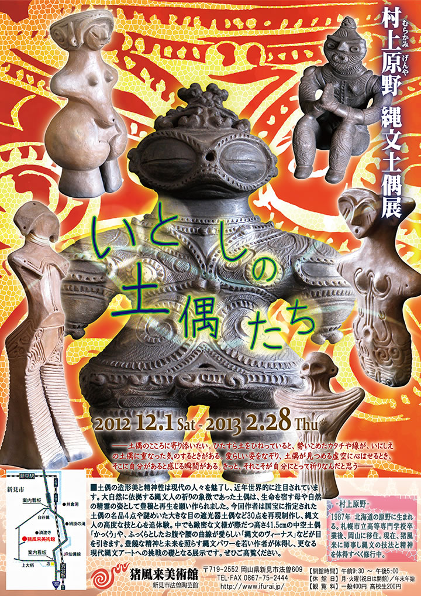
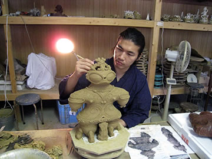
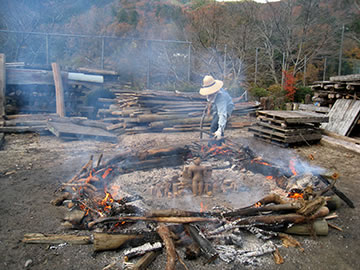
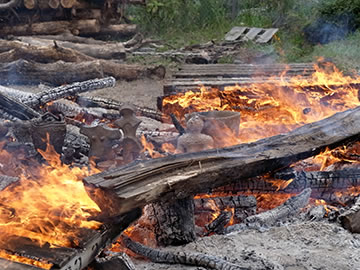
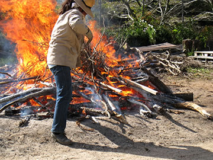

|  |
| 【村上原野 縄文土偶展『いとしの土偶たち』チラシ】 →PDF版を開く |
――土偶のこころに寄り添いたい。
ひたすら土をひねっていると、勢いこめたカタチや線が、いにしえの土偶に重なった気のするときがある。
愛らしい姿をなぞり、土偶が見つめる虚空に心はせるとき、そこに自分があると感じる瞬間がある。
きっと、それこそが自分にとって祈りなんだと思う――
=∴=∵=∴=∵=∴=∵=∴=∵=∴=∵=∴=∵=∴=∵=∴=∵=∴=∵=∴=∵=∴=∵=∴=∵=∴=∵=∴=
土偶の造形美と精神性が現代の人々を魅了し、近年世界的に注目されています。
大自然に依拠する縄文人の祈りの象徴であった土偶は、生命を宿す母や自然の精霊の姿として豊穣と再生
を願い作られました。
今回作者は国宝に指定された土偶の名品４点や謎めいた大きな目の遮光器土偶など30点を再現制作し、
縄文人の高度な技と心を追体験。
中でも緻密な文様が際だつ高さ41.5cmの中空土偶「かっくう」や、ふっくらとしたお腹や腰の曲線が
愛らしい「縄文のヴィーナス」などが目を引きます。
豊饒な精神と未来を照らす縄文パワーを若い作者が体得し、更なる現代縄文アートへの挑戦の礎となる
展示です。
ぜひご高覧ください。
=∴=∵=∴=∵=∴=∵=∴=∵=∴=∵=∴=∵=∴=∵=∴=∵=∴=∵=∴=∵=∴=∵=∴=∵=∴=∵=∴=
-村上原野-
1987年 北海道の原野に生まれる。
札幌市立高等専門学校卒業後、岡山に移住。
現在、猪風来に師事し縄文の技法と精神を体得すべく修行中。
|  |  |
|  |  |
| 【作者による土偶制作と縄文野焼きの風景】 | |